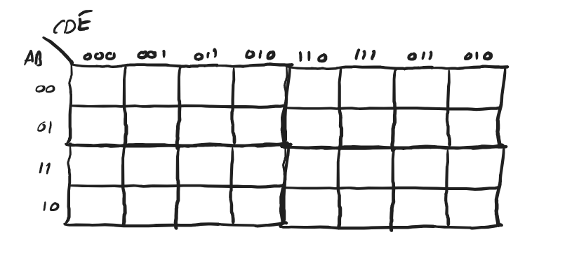

1Fikir: komşu hücreler
Bütün yöntem tek bir teoreme dayanıyor: XY + XY = X(Y + Y) = X.
Yalnızca tek bir değişkende farklı olan iki minterm toplanınca o değişken kaybolur. Örneğin ABC + ABC = AC(B + B) = AC. 2. derste bunu defalarca yaptık. Zor olan, hangi mintermlerin tek değişkende farklı olduğunu görmekti.
Karnaugh haritası doğruluk tablosunu öyle bir şekilde dizer ki yan yana duran her iki hücre tam olarak bir değişkende farklı olur. Bunu sağlayan şey 1. dersten tanıdığın Gray kodu: satır ve sütun başlıkları 00, 01, 11, 10 sırasıyla yazılır, 00, 01, 10, 11 değil. Böylece yan yana duran 1'leri daire içine almak, yukarıdaki teoremi uygulamakla aynı şey olur.
Haritada 1'leri gruplayarak okuduğumuz sonuç her zaman SOP (çarpımların toplamı) biçimindedir: her grup bir çarpım terimi, gruplar + ile toplanır.
Gray kodunda art arda gelen iki kod tek bitte farklıdır: 00 → 01 → 11 → 10 → (tekrar 00). Sondan başa dönerken de tek bit değişir. Bu yüzden haritanın sağ kenarı sol kenarıyla, üst kenarı alt kenarıyla da komşudur (5. kural).
22 değişkenli harita
F(A, B) için 4 hücreli bir tablo. Satırlar A'nın, sütunlar B'nin değerleri. Her hücre bir minterm.
Hocanın ilk çizimindeki gibi: sol üst hücre A = 0, B = 0, yani AB = m₀. Sağ alt hücre A = 1, B = 1, yani AB = m₃. Doğruluk tablosunda F = 1 olan satırların hücrelerine 1, diğerlerine 0 yazılır.
Örnek 1: F = Σ(0, 2)
Hocanın örneği, PDF s.1- Doğruluk tablosunda F = 1 olan satırlar 00 ve 10. Bunlar m₀ ve m₂, haritanın sol sütunu.
- İki 1 alt alta, yani komşu. Tek bir grup yap.
- Grubun içinde A değişiyor (0 ve 1), B sabit 0. Değişen gider, sabit kalır: B.
F(A, B) = B
Hoca cebirle de sağlamış: m₀ + m₂ = AB + AB = B(A + A) = B · 1 = B. Harita aynı sonuca hiç işlem yapmadan ulaştı.
Örnek 2: F = Σ(0, 3)
Hocanın örneği, PDF s.1İki 1 çapraz duruyor. Çapraz hücreler komşu sayılmaz (iki değişkenleri birden farklı). Bu yüzden her biri kendi başına bir grup olur ve hiçbir değişken düşmez.
F = AB + AB = A ⊙ B = A ⊕ B
Haritada satranç tahtası gibi çapraz dizilmiş 1'ler görürsen XOR ya da XNOR'dan şüphelen.
Örnek 3: F = Σ(0, 2, 3)
Hocanın örneği, PDF s.1–2- AB hücresinin tek komşu 1'i var (hoca "1 neighbor" yazmış): altındaki AB. İlk grup sol sütun: B.
- AB hücresinin de tek komşu 1'i var: solundaki AB. İkinci grup alt satır: A.
- AB iki gruba birden girdi ("2 neighbors"). Bu serbest: bir 1 birden fazla grupta olabilir.
F = B + A = A + B
Cebirle sağlama (hocanın yaptığı gibi): AB + AB + AB = AB + A(B + B) = AB + A = (A + A)(A + B) = A + B. Harita çok daha hızlı.
3Grup boyutları: her zaman 2'nin kuvveti
Hoca kırmızıyla yazmış: "In a group: 1 element 2⁰, 2 elements 2¹, 4 elements 2², 8 elements 2³, 16 elements 2⁴…"
Bir grupta 1, 2, 4, 8 ya da 16 hücre olabilir. 3, 5, 6 hücreli grup olmaz. Sebebi: grup büyüdükçe her ikiye katlanışta bir değişken daha "hem 0 hem 1" olur ve düşer. 3 hücrede bir değişken bir yarıda 0, diğer yarıda 1 olamaz.
| Grup boyutu | Düşen değişken | 3 değişkenli harita | 4 değişkenli harita |
|---|---|---|---|
| 1 (2⁰) | 0 | 3 harf (ör. ABC) | 4 harf |
| 2 (2¹) | 1 | 2 harf | 3 harf |
| 4 (2²) | 2 | 1 harf | 2 harf |
| 8 (2³) | 3 | F = 1 (bütün harita) | 1 harf |
| 16 (2⁴) | 4 | yok | F = 1 (bütün harita) |
Kural: n değişkenli haritada 2k hücrelik bir grup, n − k harfli bir terim verir. Büyük grup = kısa terim = daha az kapı.
43 değişkenli harita
8 hücre: 2 satır (A), 4 sütun (BC). Sütunlar Gray koduyla dizilir: 00, 01, 11, 10.
Sütun sırası 00, 01, 11, 10 olduğu için üst satırdaki mintermler soldan sağa m₀, m₁, m₃, m₂ diye gider. Alt satır m₄, m₅, m₇, m₆. Doğruluk tablosundan haritaya aktarırken 3. ve 4. sütunu karıştırma.
Hoca bir de dikey bir çizim yapmış: satırlarda AB (00, 01, 11, 10), sütunlarda C. Bu da doğru bir harita, sadece 90° döndürülmüş hali. Önemli olan başlıkların Gray sırasında olması. Bu sitede yatay düzeni kullanacağız.
Örnek: F = Σ(0, 1, 4, 5, 7)
Hocanın örneği, PDF s.2- 1'leri yerleştir: m₀, m₁ üst satırın ilk iki hücresi; m₄, m₅ alt satırın ilk iki hücresi; m₇ alt satırın üçüncü hücresi (BC = 11).
- En büyük grubu ara: sol 2×2 kare (m₀, m₁, m₄, m₅) dört hücrelik ilk grup. Bu karede A değişiyor, C değişiyor, B hep 0 → B.
- m₇ dışarıda kaldı. Komşusu m₅ (solunda). İkili ikinci grup: A = 1 sabit, B değişiyor, C = 1 sabit → AC.
F = AC + B
5Gruplama kuralları
Hocanın beş kuralı. Sınavda bu kuralların hepsine uyan bir gruplama beklenir.
- No single diagonal neighbors: Çapraz hücreler komşu değildir. Gruplar dikdörtgen olmalı: yatay, dikey ya da kare. L ya da T şekli olmaz.
- There should be 2ⁿ 1s inside a group: Bir grupta 1, 2, 4, 8 ya da 16 tane 1 olur. Grupta hiç 0 olamaz.
- The group size should be maximized: Her grubu olabildiğince büyük yap. 4'lü olabilecek bir grubu iki tane 2'li yaparsan sonuç doğru olur ama sade olmaz.
- All 1s should be included in at least one group: Hiçbir 1 dışarıda kalmaz. Bir 1 birden fazla grupta olabilir. Büyütmek için grupları üst üste bindirmek serbest.
- Edges of the K-map are neighbors: En sağ sütun en sol sütunla, en üst satır en alt satırla komşudur. Haritayı bir silindir gibi düşün. 4 değişkenli haritada dört köşe de birbirine komşudur.
Büyütülemeyen (daha büyük bir gruba sığmayan) her gruba asal içeren (prime implicant) denir. Bir 1'i örtebilen tek bir asal içeren varsa o gruba temel asal içeren (essential prime implicant) denir ve cevapta mutlaka bulunur.
Sıra: (1) temel grupları al, (2) kalan 1'leri en az sayıda ve en büyük grupla ört, (3) bütün 1'leri zaten başka gruplar örtüyorsa o grubu sil. Dikkat: "önce en büyük grup" her zaman doğru değildir. Aşağıdaki örnek bunu gösteriyor.
Tuzak: en büyük grup gereksiz olabilir. F = Σ(1, 5, 6, 7, 11, 12, 13, 15)
- Ortadaki 2×2 kare (m₅, m₇, m₁₃, m₁₅ → BD) haritanın en büyük grubu ve göz önce ona gider.
- Ama m₁, m₆, m₁₂, m₁₁'e bak: her biri sadece bir ikili grupla örtülebiliyor. Bu dört ikili (ACD, ABC, ABC, ACD) temel grup.
- Bu dört ikili m₅, m₇, m₁₃, m₁₅'i de zaten örtüyor. BD grubunu eklersen hiçbir yeni 1 örtmez, gereksizdir.
F = ACD + ABC + ABC + ACD (BD olmadan)
Kenarlar komşudur: F = Σ(1, 3, 4, 6, 7)
Hocanın örneği, PDF s.2–3- Üst satırda m₁ ve m₃ yan yana (BC = 01, 11). A = 0, C = 1 sabit → AC.
- Alt satırda m₄ (BC = 00) ve m₆ (BC = 10). Aralarında iki hücre var ama kenarlar komşu: en sol ve en sağ sütun yan yana sayılır. A = 1, C = 0 sabit → AC. Hoca bu grubu haritanın iki kenarından taşan açık bir çizgiyle çizmiş. Burada da aynı şekilde gösteriliyor.
- m₇ kaldı. Komşusu m₆ ile birleştir: A = 1, B = 1 sabit → AB.
F = AB + AC + AC = AB + A ⊕ C
m₇'yi m₆ yerine yukarıdaki m₃ ile de gruplayabilirdin: BC. O zaman F = BC + AC + AC olur. İkisi de eşit uzunlukta ve doğru. Bir haritanın birden fazla en sade cevabı olabilir.
6Bir grubu formüle çevirmek
Her grup için aynı soruyu sor: "Bu grubun içinde hangi değişken hiç değişmiyor?"
- Grubun kapsadığı satır ve sütun başlıklarına bak.
- Her değişken için: grubun her yerinde 1 ise düz yaz, her yerinde 0 ise çizgili yaz, bazen 0 bazen 1 ise hiç yazma.
- Kalan harfleri çarp. Bu, grubun terimi.
- Bütün grupların terimlerini + ile topla.
Terimdeki harf sayısı = toplam değişken − log₂(grup boyutu). 4 değişkenli haritada 4'lü grup 2 harf vermeli. Fazla harf yazdıysan bir değişkeni yanlışlıkla sabit sanmışsındır.
74 değişkenli harita
16 hücre: satırlarda AB, sütunlarda CD, ikisi de Gray sırasında.
Satır sırası 00, 01, 11, 10 olduğu için üçüncü satır m₁₂–m₁₅, dördüncü satır m₈–m₁₁'dir. Hem satırlarda hem sütunlarda 3. ve 4. sıra yer değiştirmiş durumda. Köşeler (m₀, m₂, m₈, m₁₀) birbirine komşu.
Örnek 1
Hocanın örneği, PDF s.3- ACD (m₀, m₄): sol sütunun üst iki hücresi. m₀'ın başka komşu 1'i yok, o yüzden bu ikili zorunlu.
- BCD (m₃, m₁₁): CD = 11 sütununun en üst ve en alt hücresi. Üst ve alt kenar komşu.
- AC (m₁₅, m₁₄, m₁₁, m₁₀): alt iki satırın sağ iki sütunu, 2×2 kare.
- AD (m₁₃, m₁₅, m₉, m₁₁): alt iki satırın orta iki sütunu.
- BC (m₄, m₅, m₁₂, m₁₃): orta iki satırın sol iki sütunu.
F = ACD + BCD + AC + AD + BC
Örnek 2: F(A, B, C, D) = ?
Hocanın örneği, PDF s.3- C: sol iki sütun (CD = 00 ve 01) tamamen 1. 8 hücrelik grup, 4 değişkenli haritada 1 harf verir.
- AB: en üst satır (AB = 00) tamamen 1. 4'lü grup.
- AD: alt iki satırda CD = 00 ve CD = 10 sütunları. Sol ve sağ kenar komşu olduğu için bu dört hücre bir 2×2 kare oluşturur. Hoca bunu kenarlardan taşan açık bir çizgiyle çizmiş.
F = AB + AD + C
Örnek 3
Hocanın örneği, PDF s.3–4- AC (m₀, m₁, m₄, m₅): üst iki satırın sol iki sütunu.
- BD (m₀, m₂, m₈, m₁₀): dört köşe. Hem sağ-sol hem üst-alt kenar komşu olduğu için köşeler 4'lü bir grup oluşturur. Sınavda en çok kaçırılan grup budur.
- AB (m₈, m₉, m₁₁, m₁₀): en alt satır (AB = 10) tamamen 1.
- BCD (m₇, m₁₅): CD = 11 sütununda AB = 01 ve 11 satırları.
F = AB + BD + AC + BCD
85 değişkenli harita
32 hücre. En kolay yol: iki tane 4 değişkenli harita çiz, biri A = 0, diğeri A = 1 için.
Her iki haritada satırlar BC, sütunlar DE. Kural: iki haritada aynı yerde duran hücreler birbirine komşudur (sadece A'da farklıdırlar). Haritaları üst üste konmuş iki kat gibi düşün. Bir grup aynı şekilde iki haritada da varsa, A düşer.

Hoca önce 8 sütunlu tek bir harita çizmiş. Sütun başlıklarını (CDE) 000, 001, 011, 010, 110, 111, 011, 010 diye yazmış. Son ikisi yanlış. Doğrusu 101, 100. 3 bitlik yansıtmalı Gray kodu şöyledir: 000, 001, 011, 010, 110, 111, 101, 100. Aynı kod bir sırada iki kez geçemez. Hocanın asıl örneği iki ayrı 4'lük haritayla çözüldüğü için bu hatadan etkilenmiyor.
Tek parça 8 sütunlu haritayı da okuyabilmelisin: satırlar AB, sütunlar CDE. Yan yana sütunlar ve iki dış kenar komşudur. Ayrıca orta çizgiye göre ayna simetriği olan sütunlar da komşudur (000↔100, 001↔101, 011↔111, 010↔110), çünkü bunlar yalnızca C'de farklıdır. Bu, iki ayrı 4'lük harita yöntemiyle aynı şeydir.
Örnek: 5 değişkenli harita
Hocanın örneği, PDF s.4Haritadaki 1'ler: F = Σ(0, 1, 2, 3, 6, 7, 10, 11, 13, 14, 15, 16, 18, 29). A = 1 haritasındaki bir hücrenin numarası, A = 0 haritasında aynı yerdeki hücrenin numarası + 16'dır (ör. m₁₃ ↔ m₂₉).
- AD: A = 0 haritasında sağ iki sütun (DE = 11 ve 10) tamamen 1. 8 hücre, sadece bir haritada → A sabit 0, D sabit 1.
- ABC: A = 0 haritasında en üst satır (BC = 00) tamamen 1.
- BCE: Her iki haritada en üst satırın DE = 00 ve DE = 10 hücreleri 1. Kenarlar komşu (00 ile 10) ve iki harita üst üste komşu. 4 hücre, A ve D düşer, B = 0, C = 0, E = 0 sabit.
- BCDE: BC = 11 satırı, DE = 01 sütunu, her iki haritada da 1. İki hücre, A düşer.
F = AD + ABC + BCE + BCDE
9Doğruluk tablosundan haritaya
"What is the simplest form of F?" Sınavın tipik sorusu: doğruluk tablosu verilir, en sade ifade istenir.
- Tablonun her satırının minterm numarasını yaz (ABCD ikili sayısı).
- F = 1 olan numaraları haritada doğru hücreye koy. Harita köşesindeki küçük numaraları referans al. 3. ve 4. satır ile sütunlara dikkat.
- Grupla, oku, topla.
Örnek: tablodan en sade F
Hocanın örneği, PDF s.5Tablodaki F sütunu (0000'dan 1111'e): 0, 1, 1, 0, 0, 1, 1, 1, 0, 1, 1, 0, 1, 1, 1, 1. Yani F = Σ(1, 2, 5, 6, 7, 9, 10, 12, 13, 14, 15).
- CD: CD = 01 sütunu tamamen 1 (4 hücre).
- CD: CD = 10 sütunu tamamen 1.
- BD: orta iki satır (AB = 01, 11) ile orta iki sütun (CD = 01, 11): m₅, m₇, m₁₃, m₁₅.
- AB: AB = 11 satırı tamamen 1.
F = CD + CD + BD + AB = C ⊕ D + BD + AB
Hoca sonda CD + CD kalıbını XOR olarak tanımış. Haritada CD = 01 ve CD = 10 sütunları (C ile D'nin farklı olduğu sütunlar) tamamen 1 ise o kısım C ⊕ D'dir. CD = 00 ve 11 sütunları tamamen 1 ise C ⊙ D.
1'ler yerine 0'ları aynı kurallarla gruplarsan F'nin en sade SOP'unu bulursun. De Morgan ile çevirince F'nin en sade POS (toplamlar çarpımı) hali çıkar. Grup okurken maxterm kuralı geçerli: 0 olan değişken düz, 1 olan çizgili, aralarında +. Soru "simplest POS" derse bu yolu kullan.
Örnek: 4. bölümdeki F = Σ(0, 1, 4, 5, 7) haritasında 0'lar m₂, m₃, m₆. {m₂, m₃} grubunda A = 0, B = 1 → (A + B). {m₂, m₆} grubunda B = 1, C = 0 → (B + C). F = (A + B)(B + C). Açarsan B + AC çıkar, SOP sonucuyla aynı.
İfadeden haritaya
İfade kanonik değilse (terimlerde eksik değişken varsa) her terimi bir blok olarak haritaya koyabilirsin: eksik değişken, o değişkenin hem 0 hem 1 olduğu bütün hücreleri doldurur.
Örnek: F = AB + AC + ABC
- AB: A = 0 satırında B = 1 olan sütunlar (BC = 11 ve 10) → m₃, m₂.
- AC: A = 1 satırında C = 0 olan sütunlar (BC = 00 ve 10) → m₄, m₆.
- ABC: tek hücre → m₇.
Haritadan: F = B + AC (sağ iki sütun B, alt satırın iki ucu AC)
10Harita çözücü
Hücrelere tıklayarak 0 ile 1 arasında geçiş yap. Araç en sade ifadeyi bulur ve grupları harita üzerinde çizer. Kendi çözümünü kontrol etmek için kullan.
11Özet kâğıdı
Harita düzeni
- Başlıklar Gray sırasında: 00, 01, 11, 10
- 3 değişken: satır A, sütun BC
- 4 değişken: satır AB, sütun CD
- 5 değişken: A = 0 ve A = 1 için iki 4'lük harita
- 3. ve 4. satır/sütun: m₃ ↔ m₂, m₁₂–m₁₅ ↔ m₈–m₁₁
Hocanın 5 kuralı
- Çapraz komşu yok
- Grupta 2ⁿ tane 1 (1, 2, 4, 8, 16), hiç 0 yok
- Gruplar olabildiğince büyük
- Her 1 en az bir grupta (üst üste binmek serbest)
- Kenarlar komşu, 4'lük haritada 4 köşe de komşu
Grup okuma
- Grubun her yerinde 1 olan değişken: düz
- Her yerinde 0 olan: çizgili
- Değişen: yazılmaz
- 2k'lık grup → n − k harf
Hocanın sonuçları
- Σ(0,2) → B; Σ(0,2,3) → A + B
- Σ(0,1,4,5,7) → AC + B
- Σ(1,3,4,6,7) → AB + AC + AC
- Tablo örneği → C ⊕ D + BD + AB
- Σ(0,3) → A ⊙ B
- 4 değişken 1 → ACD + BCD + AC + AD + BC
- 4 değişken 2 → AB + AD + C
- 4 değişken 3 → AB + BD + AC + BCD
- 5 değişken → AD + ABC + BCE + BCDE
İngilizce–Türkçe terimler
- Karnaugh map (K-map)
- Karnaugh haritası
- neighbor / adjacent
- komşu
- group
- grup (öbek)
- diagonal
- çapraz
- edges / corners
- kenarlar / köşeler
- prime implicant
- asal içeren / asal implikant (büyütülemeyen grup)
- essential prime implicant
- temel asal içeren (bir 1'i tek başına örten asal içeren)
- simplest form
- en sade biçim
12Alıştırmalar ve test
Önce kâğıda haritayı çiz ve grupla, sonra çözüme bak. Sonucunu 10. bölümdeki çözücüyle de kontrol edebilirsin.
Çözümlü alıştırmalar
- F(A, B) = Σ(1, 3)'ü sadeleştir.
Çözümü göster
m₁ ve m₃ sağ sütun (B = 1). A değişiyor → F = B.
- F(A, B, C) = Σ(2, 3, 6, 7)'yi sadeleştir.
Çözümü göster
Sağ iki sütun (BC = 11 ve 10) her iki satırda 1. 4'lü grup. A değişiyor, C değişiyor, B = 1 → F = B.
- F(A, B, C) = Σ(0, 2, 4, 6)'yı sadeleştir.
Çözümü göster
BC = 00 ve BC = 10 sütunları, iki satırda da 1. Kenarlar komşu → 4'lü grup. C hep 0 → F = C.
- F(A, B, C) = Σ(1, 2, 4, 7)'yi sadeleştir.
Çözümü göster
Haritada hiçbir iki 1 komşu değil (satranç tahtası deseni). Her biri tek başına → 4 minterm toplamı. Bu desen 3 girişli XOR: F = A ⊕ B ⊕ C.
- F(A, B, C, D) = Σ(0, 2, 8, 10)'u sadeleştir.
Çözümü göster
Dört köşe! Köşeler komşu → 4'lü grup. B = 0, D = 0 sabit → F = BD.
- F(A, B, C, D) = Σ(5, 7, 13, 15)'i sadeleştir.
Çözümü göster
Orta iki satır (AB = 01, 11) ile orta iki sütun (CD = 01, 11): ortadaki 2×2 kare. B = 1, D = 1 → F = BD.
- F(A, B, C, D) = Σ(0, 1, 2, 3, 8, 9, 10, 11)'i sadeleştir.
Çözümü göster
En üst satır (AB = 00) ve en alt satır (AB = 10). Üst ve alt kenar komşu → 8'li grup. B = 0 → F = B.
- F(A, B, C, D) = Σ(0, 1, 3, 7, 15)'i sadeleştir.
Çözümü göster
m₀–m₁: ABC. m₃: m₁ ile ABD ya da m₇ ile ACD. m₁₅: m₇ ile BCD. En sade: ABC + ACD + BCD. (ABD ile de aynı uzunlukta doğru bir cevap çıkar.)